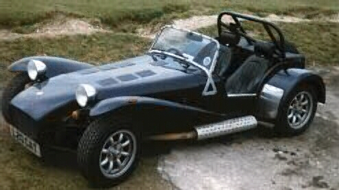
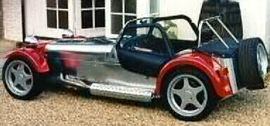

Caterham Super Seven HPC


Specs
Price |
$29,208 |
Top Speed |
126mph |
Acceleration |
|
Engine |
|
0-30mph |
2.2sec |
Type |
I-4, 8valve DOCH |
0-60mph |
5.4sec |
Displacement |
2.0L(1998cc) |
0-100 |
13.3sec |
Power |
175hp@6000rpm |
1/4 mile |
12.8sec/109.9mph |
Torque |
155 lbs-ft@4800rpm |
Weight |
1,385 lbs(!!) |
Handling |
|
Gas mileage |
19.5mpg |
Skidpad |
N/A |
City |
N/A |
600ft slalom |
N/A |
Highway |
N/A |
Powertrain |
Front engined, rear wheel drive, 5 speed manual |
(? = incomplete data or unverified info, N/A = info Not Available)
Beyond the specs:
Stripped completely bare it is no surprise that this car weighs under 1,400 pounds, which upon further inspection of the specs (hp, 0-60, etc.) is obviously the secrete to its performance. The interior of this car is cramped and free of anything not absolutely necessary for performance. This is not the kind of car you want to get if you are looking for comfort and a supple ride, for that is the last thing you will find in here. It performance is an its handling is awesome, and all of this comes at a very low price, then again one look at it can tell you its cheap. Its only downfall performance wise is its high drag, which gives it a very low top speed and hinders acceleration at high speeds. If performance is so important to you that you are willing to give up the luxuries of the modern world to shave off a few seconds in 0-60 acceleration and add a few more lateral g's to your cars limits then you were meant for this car.
~Oracle